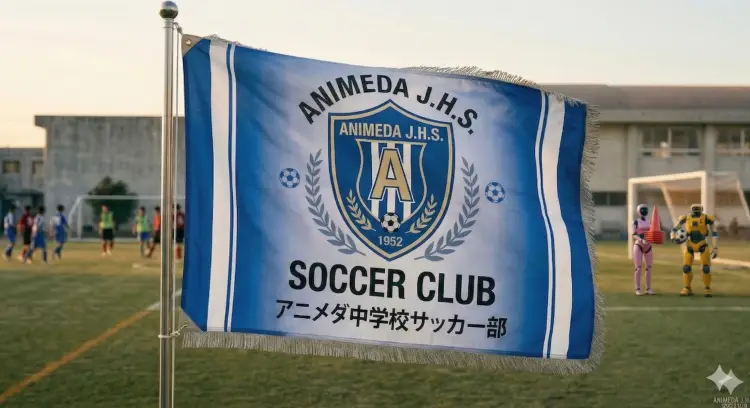
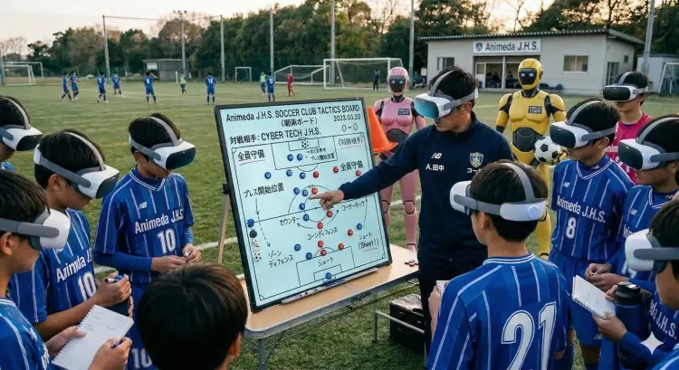
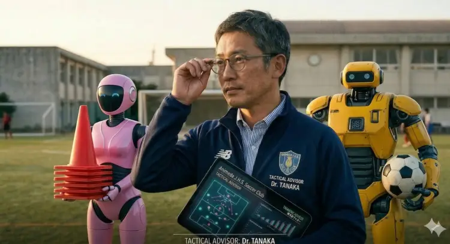
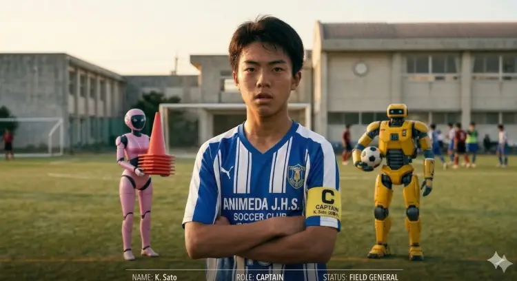
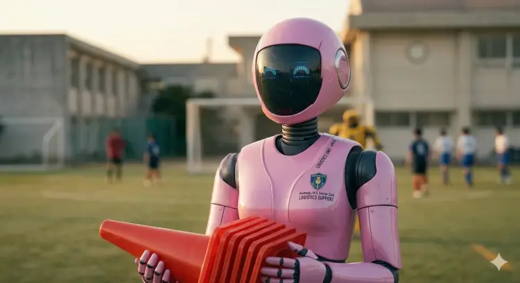

STRATEGY MEETS SKILL

>> TACTICAL ANALYSIS GRID v2.0_WHITE_EDITION
16:00 - 18:30
Tactical Drills & Simulation
09:00 - 15:00
Official Match / Training Game

Tactical Advisor (顧問)
元プロアナリストとしての経験を活かし、チームの戦術的基盤を構築する冷徹な頭脳。データに基づく緻密な戦略で勝利を導く。

Field General (主将)
ピッチ上の絶対的司令塔。瞬時の判断力と卓越したボールコントロールで、敵の守備陣を切り裂く天才的ゲームメーカー。
前線での戦術支援とデータ解析を担当する最新鋭AIボット。瞬時に最適なルートを計算する。

物資運搬・後方支援を担う重装甲ボット。いかなる過酷な環境下でも任務を完遂する。
前半からアポロの戦術データリンクとサトウのパスワークが完全にシンクロし、相手のディフェンスラインを無力化。後半にはサイドからの崩しで追加点を奪い、サイバーテック中を相手に圧倒的なポゼッションを保ったまま完勝を収めた。
パス成功率89%、敵陣でのボール奪取回数24回と、前線からのハイプレスが完璧に機能。特にトランジション（攻守の切り替え）の速度が前節より劇的に向上していることがデータからも実証された。
終盤のスタミナ低下に伴うパス精度の乱れが課題。ロジスティクスボット・コーンの運用アルゴリズムを見直し、後半15分以降の効率的なエネルギー（水分・栄養）補給のタイミングを最適化する必要がある。